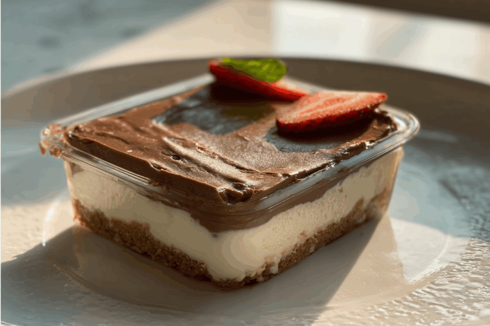

Chocolate cheesecake

Description
Cheesecake has an ancient history, dating back to the Greeks who served it during the first Olympic Games. Over time, it evolved into countless styles, from New York baked cheesecake to Japanese souffle cheesecake. Lunchbox Cheesecake is a modern adaptation inspired by Asian “lunchbox cakes” light sponge cakes topped with cream transformed here into a cheesecake version that’s individually portioned and perfect for on-the-go indulgence.
Ingredients
- Digestive Biscuits
- Cream cheese
- Unsalted Butter
- Vanilla extract
- Heavy cream
- Corn starch
- Sugar
- Lemon juice
- Eggs
Steps
- Preheat the oven to 160°C and line an 8×8 inch square pan with parchment, leaving overhang for easy lift.Preheat the oven to 160°C and line an 8×8 inch square pan with parchment, leaving overhang for easy lift.
- Stir crushed biscuits with melted butter until evenly moistened, then press firmly into the pan to form a compact base.
- Beat cream cheese and sugar until smooth, then mix in vanilla and lemon juice.
- Add eggs one at a time, mixing just until combined, then blend in heavy cream and cornstarch until smooth.
- Pour the batter over the crust and smooth the top with a spatula.
- Bake for 35 to 40 minutes until the edges are set and the center still has a slight jiggle.
- Cool completely at room temperature, then refrigerate for at least 4 hours or overnight to set.
- Lift out, cut into 9 squares, and serve plain or topped with fruit, chocolate, or jam.
Home